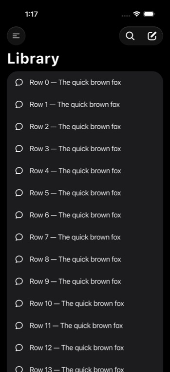
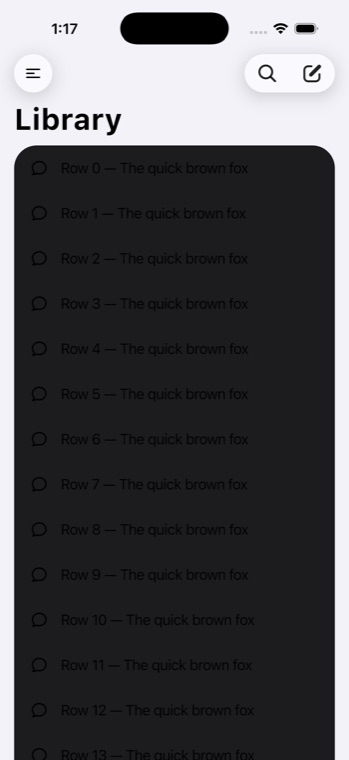
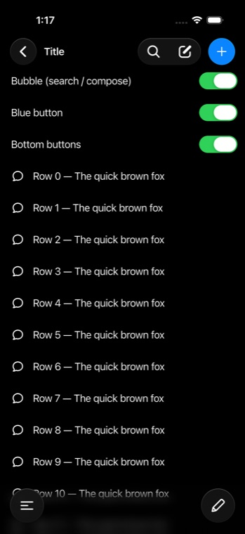
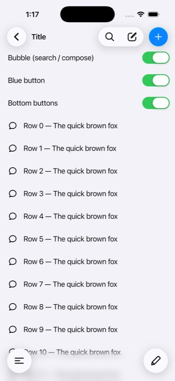

Быстрый старт
От пустого проекта до страницы с большим заголовком, стеклянными кнопками и таб-баром.




1. Подключите пакет и загрузите шейдеры
await preloadRavelUiKit();
runApp(SwiftUiApp(theme: SwiftUiThemeData.light(), darkTheme: SwiftUiThemeData.dark(), home: const Home()));SwiftUiApp делает то же, что MaterialApp: тема, роутер, навигатор. Он дополнительно прогревает GPU-пайплайны ядра (warmUp: true).
2. Страница — SwiftUiScaffold
class Home extends StatelessWidget {
const Home({super.key});
@override
Widget build(BuildContext context) => SwiftUiScaffold(
title: 'Inbox',
actions: [
GlassCircleButton(icon: RavelIcon(RavelIconKind.plus), onPressed: () {}),
],
body: ListView(children: [
for (var i = 0; i < 30; i++) ListRow(title: 'Row $i', onTap: () {}),
]),
);
}Заголовок крупный и сворачивается при скролле; список уходит под бар в прогрессивный блюр. Содержимое ListView само получает верхний отступ — ничего считать не нужно.
3. Таб-бар поверх страниц — SwiftUiShell
SwiftUiShell(
body: SwiftUiPageSwitcher(index: tab, children: const [InboxPage(), SearchPage(), SettingsPage()]),
bottomBar: GlassTabBar(
selectedIndex: tab,
onSelected: (i) => setState(() => tab = i),
tabs: [
GlassTab(icon: RavelIcon(RavelIconKind.chat), label: 'Chats'),
GlassTab(icon: RavelIcon(RavelIconKind.search), label: 'Search'),
],
),
)4. Оверлеи
showGlassSheet<void>(context, child: const MyForm());
final ok = await showGlassAlert<bool>(context, title: 'Delete?', actions: [
GlassAlertAction(label: 'Delete', role: GlassAlertRole.destructive, value: true),
GlassAlertAction(label: 'Cancel', role: GlassAlertRole.cancel, value: false),
]);Дальше — гайды про стекло и производительность и навигацию и листы.